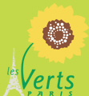

|
|

درخواست ماری ترز آتلا و نمایندگان گروه «سبزها» در رابطه با پشتیبانی شهرداری پاریس از زنان مبارز ایران در دفاع از حقوق زن
جمعه24 فروردین 1386
اخبار روز: روز چهار مارس ۲۰۰۷، در پی یک سرکوب خشن پلیسی، ٣٣ تن از مبارزان حقوق زنان در ایران دستگیر شدند. این زنان که خود را برای بزرگداشت ٨ مارس روز جهانی زن آماده میکردند، تجمع مسالمت آمیزی را در برابر دادگاه انقلاب برپا کرده بودند. آنان به محاکمه شش تن از زنان مدافع حقوق زن اعتراض داشتند که از ماه ژوئن ۲۰۰۶ بهخاطر شرکتشان در یک گردهمایی مسالمت آمیز و مشارکتشان در کارزار «یک میلیون امضاء» تحت تعقیب قرار گرفته بودند. در هفتههای اخیر، سایت اینترنتی این کارزار دفاع از حقوق زن توسط مقامات ایرانی سانسور شده، که این امر دسترسی به اخبار مربوط به این مسائل را برای مراجعهکنندگان ایرانی این سایت با مشکل مواجه کرده است.
اجلاس مورخ ۱۶ و ۱۷ اکتبر ۲۰۰۶ شورای شهر پاریس، همبستگی خود را با کارزار «یک میلیون امضاء» جهت پشتیبانی از زنان ایران و زنان مهاجر ایرانی در مبارزهشان برای برابری حقوق مردان و زنان در کشورشان اعلام کرده است.
موج جدید دستگیریهای خودسرانه در اوایل ماه جاری، گواه دیگری بر گسترش حمله و تعرض به مدافعان حقوق بشر و حقوق زنان در ایران است. ما بار دیگر انزجار خود را از سیاست سرکوب و نقض حقوق شهروندان که توسط دولت ایران بطور سیستماتیک علیه مدافعان حقوق بشر اعمال میشود، اعلام میکنیم.
بههمین جهت، شورای شهر پاریس بر اساس پیشنهاد ماری ترز آتلا و نمایندگان «سبزها» از شهردار پاریس تقاضا میکند که نقض حقوق و آزادیهای شهروندان زن در ایران را به شدت محکوم کرده و خصوصا همبستگی خود را با مبارزان فمینیستی که بطور مسالمتآمیز در راه برابری حقوقی میان زنان و مردان در ایران پیکار میکنند، مورد تاکید قرار دهد.
این درخواست در شورای شهر پاریس مورخ ۲۶ و ۲۷ مارس ۲۰۰۷ به اتفاق آرا به تصویب رسید.